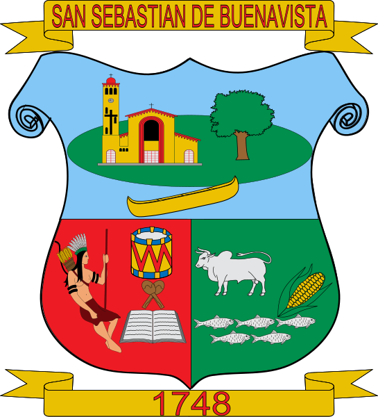

San Sebastián de Buenavista
☰
Inicio
Cultura
Turismo
Gastronomía
Eventos
Directorio
Contacto
Tu navegador no soporta el video
Tierra de chandé y tradición cultural
Un lugar donde la música, la naturaleza y la calidez de su gente te esperan
Explora nuestra cultura